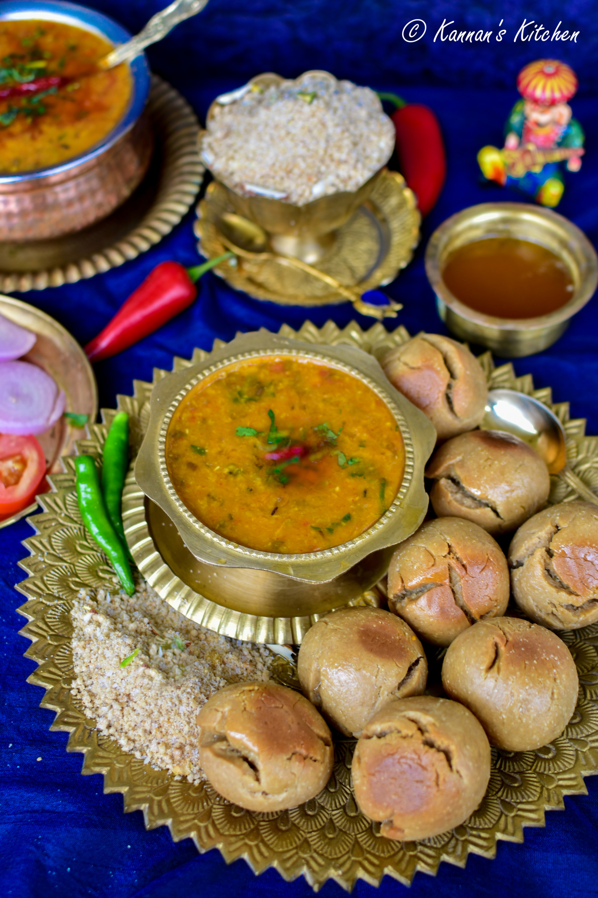
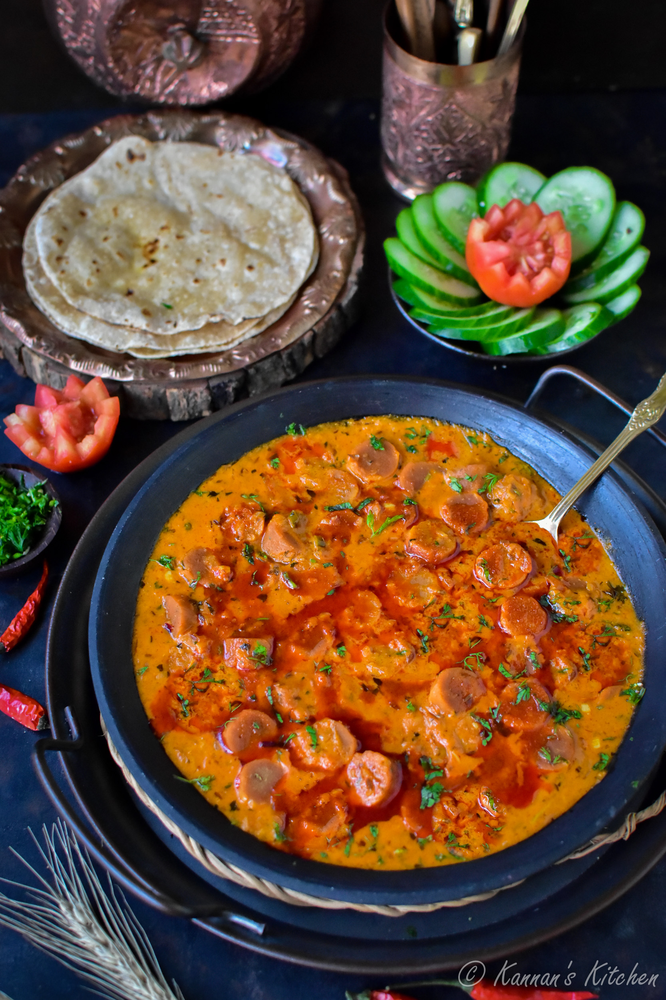
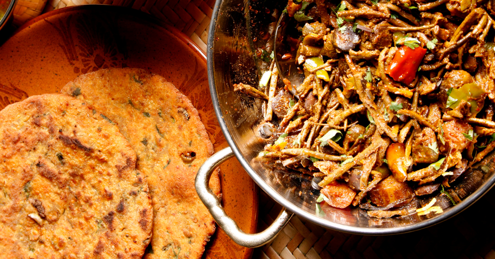
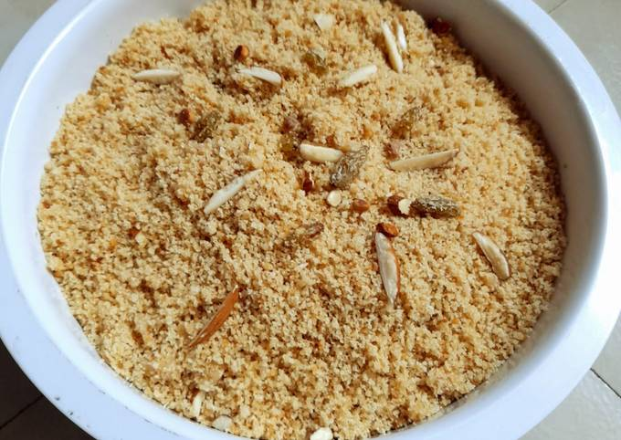
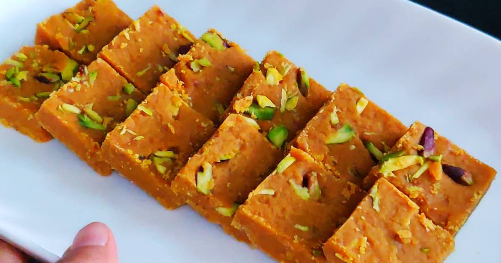

Rajasthani Food
Dal Baati
Ingredients: Wheat flour, Lentils, Spices.
Recipe: Prepare baati, bake, and serve with dal.
Gatte Ki Sabzi
Ingredients: Gram flour, Spices, Yogurt.
Recipe: Prepare gatte, cook in gravy.
Ker Sangri
Ingredients: Ker, Sangri, Spices.
Recipe: Cook ker and sangri with spices.
Churma
Ingredients: Wheat flour, Jaggery, Ghee.
Recipe: Prepare dough, bake, and mix with jaggery.
Besan Ki Chakki
Ingredients: Gram flour, Spices.
Recipe: Prepare dough, roll, and fry.